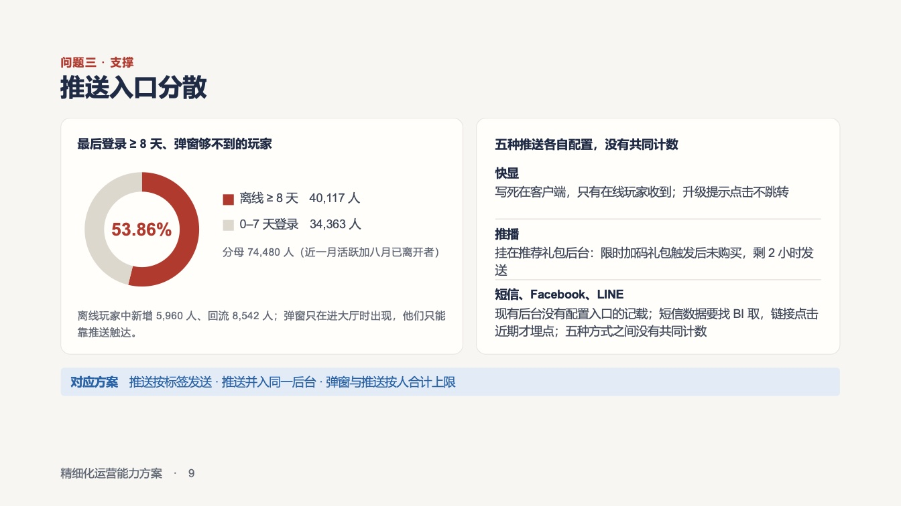
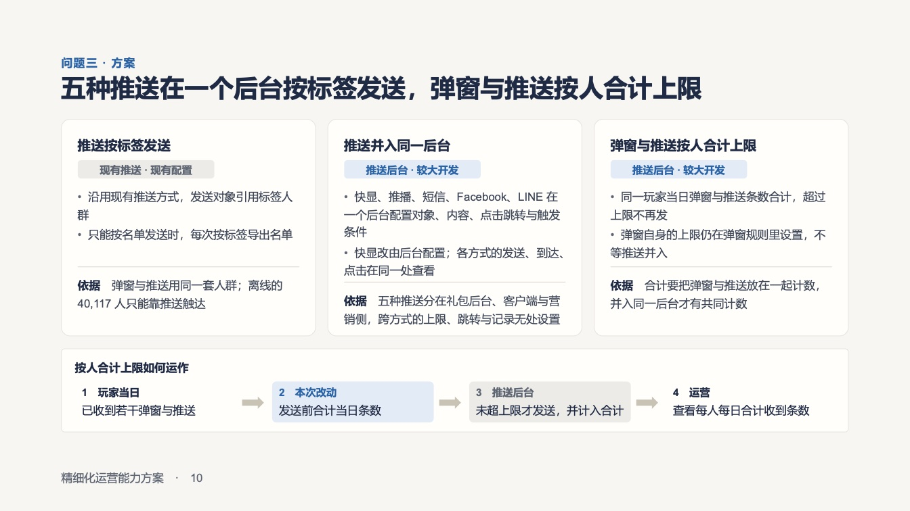
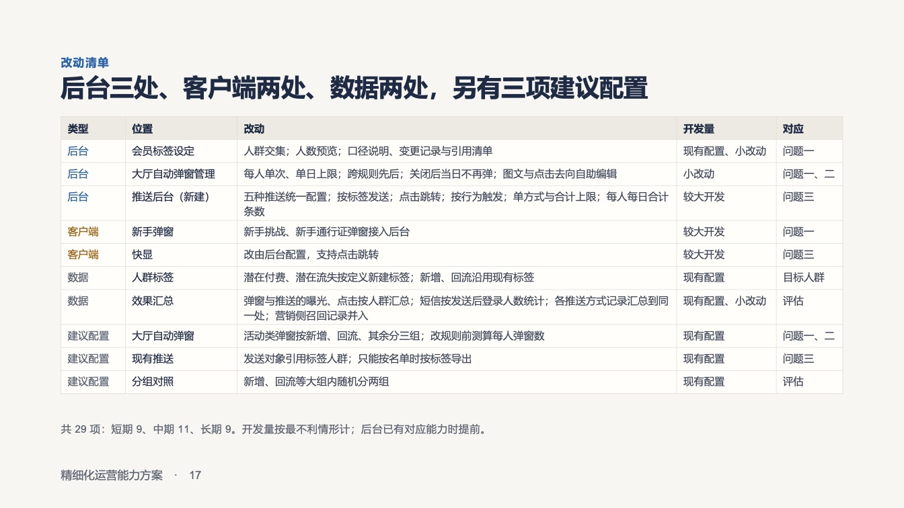
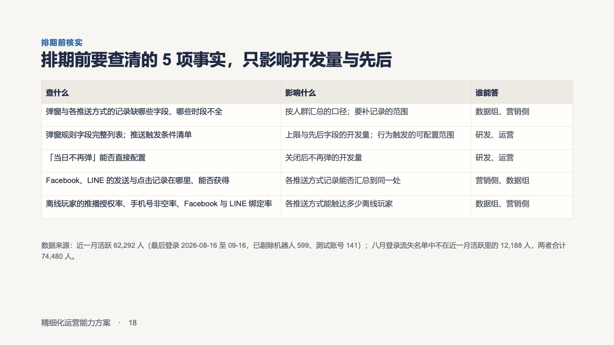
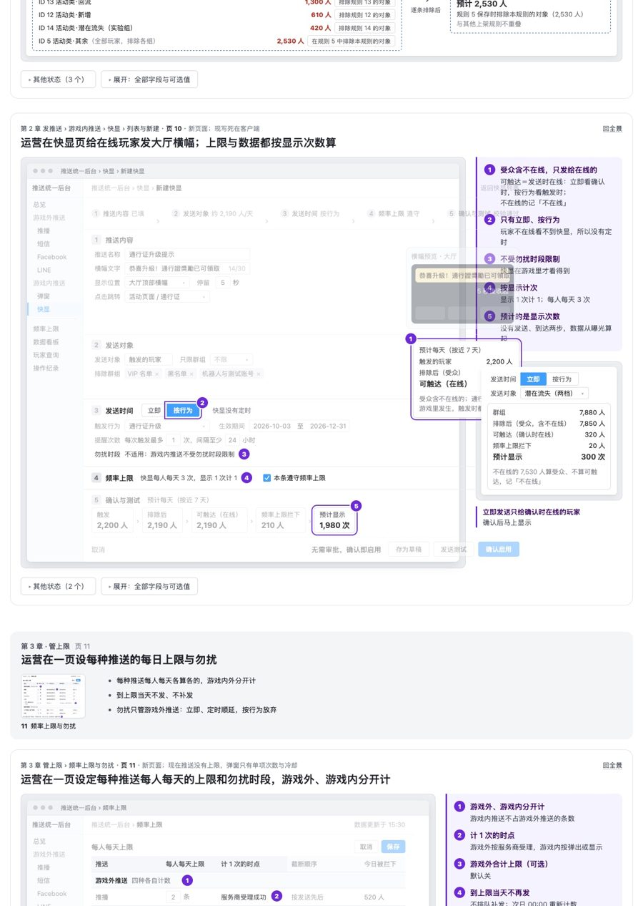
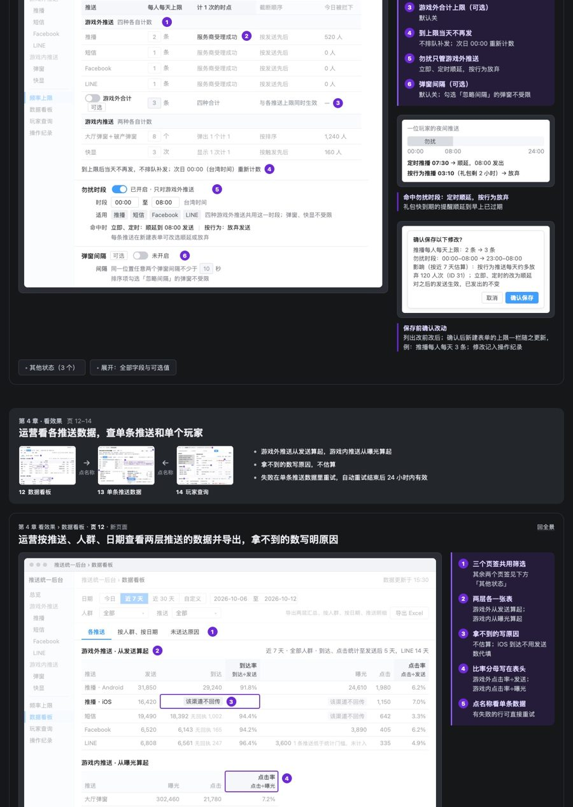
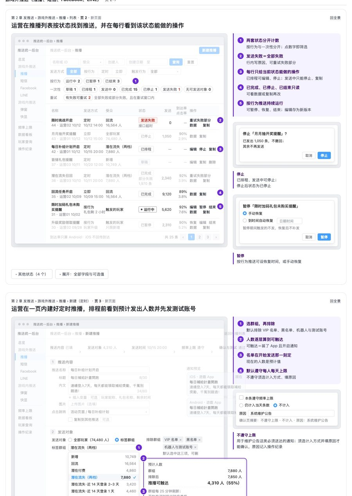
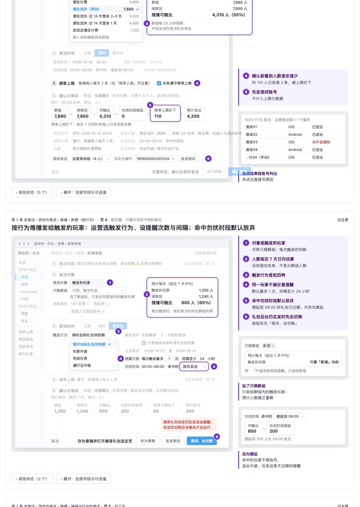
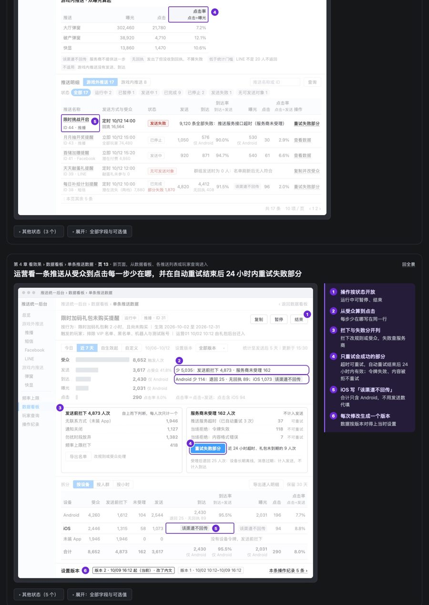
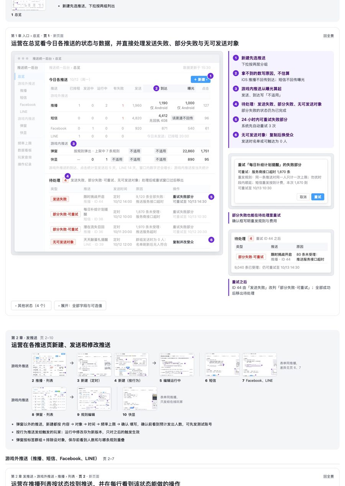

剩下 23 条，看第一行就能判
已判 13 条，已存。每条第一行是验收官说的问题和在哪；你觉得这处确实该改就点「同意」，不算问题或不值得改就点「不同意」（可写一句理由）。要看原文和截图，点「展开看证据」。点完按底部「复制结果」，贴给「用好 Claude：进度沟通」。
主管的需求原文
主管的产品计划（短期三项）：「1. 彈窗功能：滿足不同用戶下的彈窗內容，并整體控制彈窗 數量/內容/順序等；針對 新增 / 回流 / 破產 / 潛在付費 / 潛在流失用戶 逐步設計 客製化彈窗內容。2. 推送：統一推送入口，提高易用性，并增加數據情況（發送量，到達率等）。3. 標籤能力：針對現有標籤能力進行補充，并根據產品側使用情況持續優化」
第 1 份弹窗方案呈交版 V4（10/12，29 页版的前 16 页）当时的读者：主管｜用途：阶段性汇报进度，让主管看出方案和他的期望有没有出入
第 2 份弹窗方案呈交版 V4 第 2 页（结论页）（10/10 新设计，只有这一页）当时的读者：主管｜用途：整份呈交版的结论页
看这份稿
第 3 份弹窗方案呈交版 V2（10/10，整份 18 页）当时的读者：主管｜用途：判断方案方向对不对
3-5「按标签发送」一处说不用开发、一处说较大开发，自相矛盾在哪：V2 · 第 9、10、11、13、17 页
展开看证据
稿件原文第 10 页「推送按标签发送｜现有推送 · 现有配置」，第 9 页「快显 写死在客户端」「推播 挂在推荐礼包后台」，第 11 页「长期 排期取决于各推送方式能否按标签发送」，第 17 页推送后台「按标签发送…较大开发」；第 9 页「现有后台没有配置入口的记载」，第 13 页「这些字段能否由运营编辑，没有记载｜…｜小改动」
验收官说的问题同一项「按标签发送」，一处说不用开发、短期就能做，一处说较大开发、排期待查，自相矛盾。好几项现状只是「没有记载」，没查实，却已经定了开发量和分层。主管熟悉自家后台，会问「问过研发没有」。
验收官的修改建议
没查清的统一移到第 18 页「排期前核实」，不放进短期项；按标签发送只保留一种说法。

第 9 页
第 10 页第 11 页第 13 页
第 17 页
第 18 页点图放大，再点缩回
第 4 份推送统一后台原型（10/14，网页原型截成 15 段）当时的读者：主管和运营｜用途：看后台要做成什么样｜Dk 和主管同步后确认：「确实要后台集成数据」
4-2推送上限、勿扰、排除 VIP 等少发的规则直接当默认值，没写依据在哪：推送后台原型 · 页 3、4、11、13
展开看证据
稿件原文页 11 页头「现在推送没有上限，弹窗只有单项次数与冷却」；上限表「推播 2 条／短信 1 条／Facebook 1 条／LINE 1 条／大厅弹窗＋破产弹窗 8 个／快显 3 次」；「到上限后当天不发，不排队补发」；页 4「命中勿扰时段默认放弃」；页 3「默认排除 VIP 名单、黑名单、机器人与测试账号」
验收官说的问题这几条都是新加的、会少发的规则，稿里直接当默认值呈现，没写为什么是 2 条、8 个，为什么默认排除 VIP，也没标出哪些要主管拍板。稿件自己的样例就能看出影响：页 13 一条推送有 8,652 人次触发，被「勿扰时段放弃 1,382」和「频率上限拦下 418」挡掉 1,800 人次，约 21%。主管看业绩，一定会追问
依据需求原文只要求「統一推送入口、提高易用性、增加數據情況」，推送上限和勿扰不在原文里；弹窗只要求「整體控制彈窗數量」
验收官的修改建议
页 11 每个默认值旁写依据（参照竞品或现有数据），再写按近 7 天估算的少发量；全景单列一栏「需要主管定的规则」。

原型截图第 8 段（含第 11 页）
原型截图第 9 段（含第 11 页）
原型截图第 3 段（含第 3 页）
原型截图第 4 段（含第 3 页）
原型截图第 10 段（含第 13 页）点图放大，再点缩回
4-4到达率 90% 算法不对，iOS 送达自相矛盾，几项数字加不平在哪：推送后台原型 · 页 1、3、12
展开看证据
稿件原文页 12 推送明细表头「到达率 到达÷发送」，ID 43 一行「1,050｜576 仅 Android｜90.0%」；页 1 推播一行「发送 1,960｜到达 1,190 仅 Android」；页 3 测试结果「测试01 iOS 已送达」，而页 1 写「iOS 推播不回传到达」；页 12 短信「19,490｜18,392 无回执 1,002」、Facebook「6,520｜6,143 无回执 165」
验收官说的问题①按表头算，576÷1,050＝54.9%，不是 90%；90% 实际用的是 Android 发送量作分母，表里没写。②测试结果说 iOS「已送达」，和「iOS 不回传到达」自相矛盾。③短信 18,392＋1,002＝19,394，比发送少 96；Facebook 少 212。同一页的 LINE 和页 1 的短信都对得上，读者会问差额去了哪里
依据到達率是需求原文点名要的指标；APNs 不提供送达回执，稿件自己也这么写
验收官的修改建议
没按平台拆行的推播，到达率改写成「到达÷Android 发送」，并显示这个分母；测试结果中 iOS 改写「已提交」或注明判断依据；短信和 Facebook 补一列「失败／退回」，让三个数加起来等于发送。
原型截图第 9 段（含第 12 页）原型截图第 10 段（含第 12 页）
原型截图第 2 段（含第 1 页）原型截图第 3 段（含第 3 页）原型截图第 4 段（含第 3 页） 点图放大，再点缩回